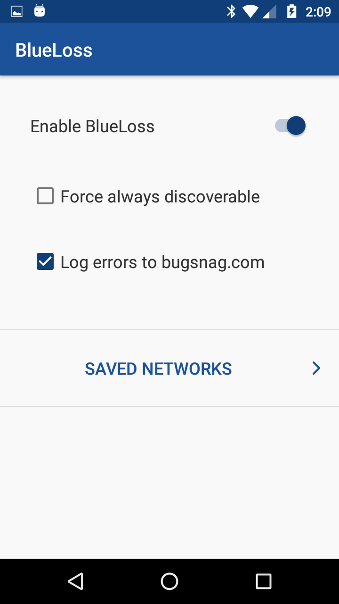
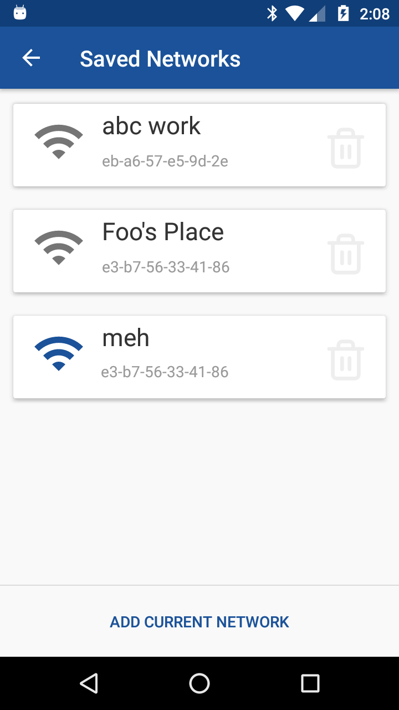
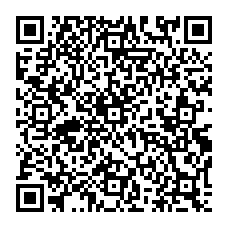

BlueLoss Android App
Installation:
- play store
- Or you can download the apk to install manually here
Screenshots:
 How To Use:
Opening the app will start the BlueLoss service on your device. After this, the service will continue to run in the background including after rebooting your device.
Main View Settings:
The following settings are configurable in the BlueLoss settings window:
-
Enable BlueLoss (default: enabled)
-
Force always discoverable (default: disabled): Only use this in testing. This setting forces your device to be discoverable via Bluetooth regardless of whether it is connected to a trusted wifi network.
-
Log errors to bugsnag.com (default: enabled): This setting enables logging any app crashes to bugsnag.com. This helps development of the app.
Networks View:
On this view you can add and remove networks.
If you have already saved the current network you are connected to, it will display in this list with a blue wifi icon on the left.
How It Works:
The app runs a service on your device. This service polls network information once every 5 seconds. If you are currently connected to a network you have saved in the app, the BlueLoss service will set your device to be discoverable via Bluetooth.
Security Info:
Constantly broadcasting your device as discoverable via Bluetooth is a security issue, so I wouldn't recomment using this when you need high security.
Additional notes:
-
You should temporarily disable BlueLoss when you want to use the Android bluetooth settings page as the BlueLoss app may interfere. You can re-enable the BlueLoss app once you are out and of the Android bluetooth settings.
-
If you uninstall the BlueLoss app, make sure that you disable the BlueLoss app first in its settings, to make sure that you are not broadcasting, because if BlueLoss is broadcasting before you uninstall it, there is no way for the app to know when it is being uninstalled and to stop broadcasting.
Support:
Please open an issue for support here: BlueLoss-Android-App/issues
Donate:
Buy Me A Coffee: 
Bitcoin: Click the image below if you have a bitcoin app installed, or use it as a QR code. Or copy the address manually below.
1M6FmSZUJJzj4n3qLkSh2s19dqmXeYXrFT